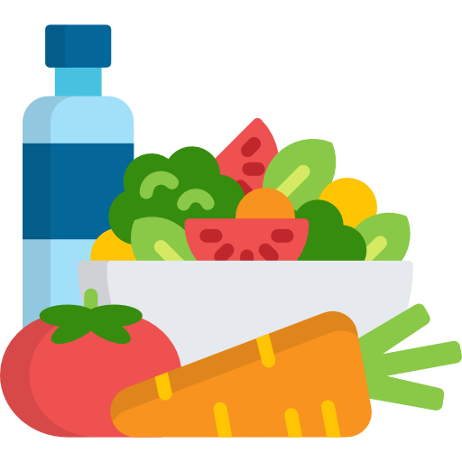

6 Consumption data

A consumption model describes the amount of food consumed during a particular eating occasion (i.e., a serving) and/or the frequency of the consumption of these servings, or an average amount of food consumed per day. This amount may vary in time, between individuals, between the different population groups of interest and the considered exposure type.
6.1 The EFSA Comprehensive European Food Consumption Database
6.1.1 Scope
The Comprehensive Food Consumption Database gathers information on food consumption across the EU member states. The database is dedicated to be used in risk assessments related to possible chemical and microbiological hazards. The database is also relevant for the assessment of nutrient intakes. The food classification system ‘FoodEx2’ is used to categorise all foods and beverages included in the Comprehensive Database.
6.1.2 Accessibility
6.2 FAO/WHO GIFT | Global Individual Food consumption data Tool
6.2.1 Scope
6.2.2 Accessibility
6.3 Food safety collaborative platform (FOSCOLLAB)
WHO | Food Safety Collaborative Platform